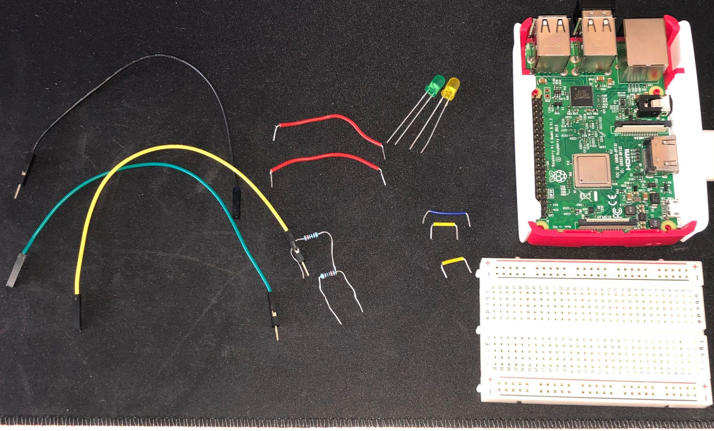
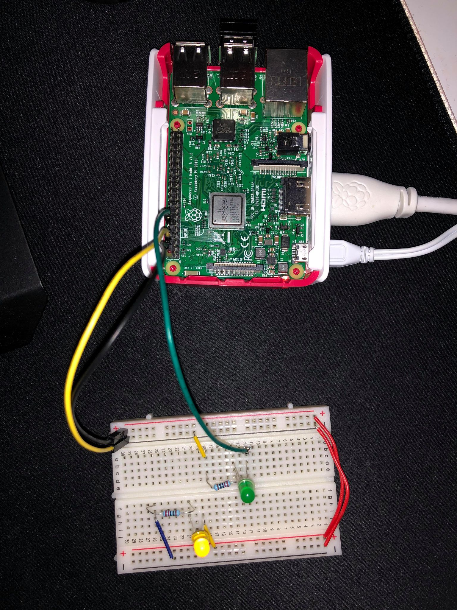
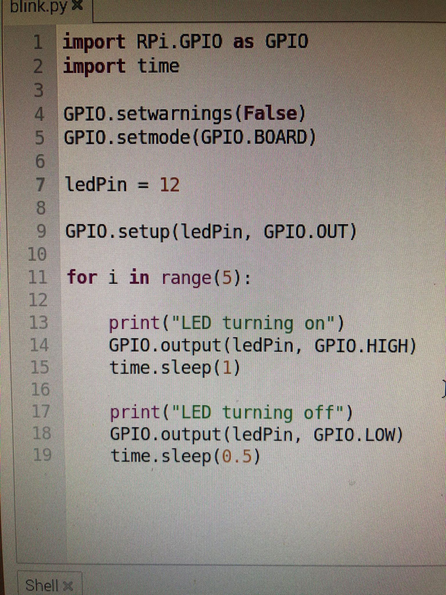
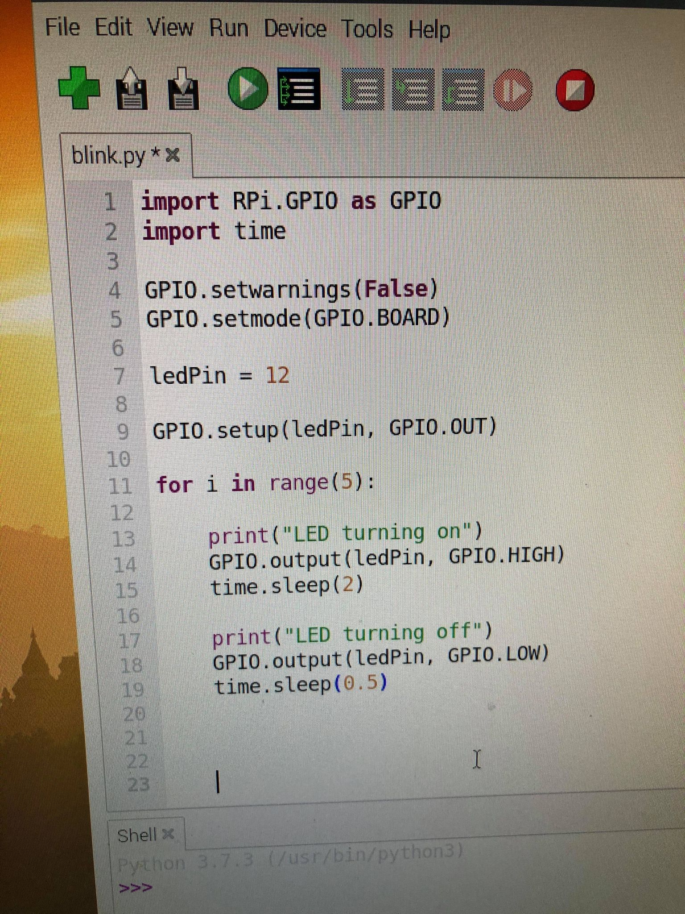

Prosjekt 4 - Raspberry Pi
For mitt fjerde prosjekt i emnet DigiFab hadde vi temaet RaspberryPi. Vi skulle lage et enkelt prosjekt med Raspberry Pi og elektronikk. Ettersom jeg ikke har mye erfaring med RaspberryPi har jeg gått for et enkelt prosjekt med LED lys. Jeg fant dette prosjektet på youtube.com/MakeUseOf
Blinkende LED lys
Blinkende LED lys består av et lys som lyser konstant, og et som blinker i ønsket lengde. Jeg har for å vise forståelse gjor at lyset blinker både 1 og 2 sekunder.
Utstyret som ble brukt for dette prosjektet
Hva jeg brukte:
- RaspberryPi
- breadboard
- 2 x 220 ohm resistor
- 1 x ledlys av forskjellig farge
- 3 x ledninger fra RaspberryPi til breadboardet.
- 1 x piezo
- 3 korte ledninger
Ferdig koblet RaspberryPi og breadboard
Etter å ha koblet ferdig RaspberryPien skrev jeg koden for å få lyset til å blinke.
Koden:
Hvordan RaspberryPien da fungerer
Under har jeg lagt en video som viser at det ene lyset lyser konstant (ettersom det er koblet direkte i 5 volt.) mens det andre lyser i 1 sekund før det skrus av i 0,5 sek og går på igjen i 1 sek.
Under her legger jeg hvordan hvordan koden er når den kjøres, ettersom jeg la til at den skal skrive "led på" og "led av" henholdsvis i shell.
2 sekunder blink
Under har jeg lagt koden med endring på pause fra 1 sekund til 2 sekunder, for å få lyset til å blinke i 2 sekunder.
